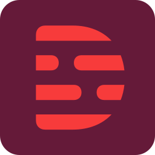

KI-Tools — App-Übersicht
Welche KI-App passt zu deiner Aufgabe?
KI-Apps für Video, Stimme, Text, Meetings und Büro: verständlich erklärt, mit Funktionen, Kosten und Alternativen – und direktem Start beim Anbieter.
12 Apps6 KategorienDetails vor dem Start
12 von 12 Apps
Synthesia
Synthesia Limited · London, UK
KI-Videos mit Avataren aus einem Skript
- Unternehmen
- Schulungen & Weiterbildung
- Erklärvideos
Gratis-Plan verfügbarvideoDetails ansehen →
Adobe
Adobe Inc.
Design, Bild, Video und Dokumente in einem Ökosystem
- Unternehmen
- Agenturen
- Grafik & Design
Kein Gratis-EinstiegvideoDetails ansehen →
Fliki
Nine Thirty Five LLC · Fliki.ai
Text zu Video und Stimme in einem Schritt
- Social Media
- Content-Teams
- Blogger & Selbstständige
Gratis-Plan verfügbarvideoDetails ansehen →
Luma AI
Luma AI, Inc.
Kurze Videoclips aus Text oder Bild generieren
- Konzept & Ideenfindung
- Werbung & Social Media
- Kreativteams
Kein Gratis-EinstiegvideoDetails ansehen →
ElevenLabs
Eleven Labs Inc.
Sprachausgabe und Synchronisation in Studioqualität
- Schulungsvideos
- Podcasts & Hörfassungen
- Medien & Verlage
Gratis-Plan verfügbarvoiceDetails ansehen →
Murf AI
Murf AI
Sprachausgabe und Voice-Over für Präsentationen
- Präsentationen
- E-Learning
- Produktvideos
Kostenlose TestphasevoiceDetails ansehen →
Notion
Notion Labs, Inc.
Wissensbasis, Projekte und Notizen mit KI-Funktionen
- Unternehmen
- Projektteams
- Wissensmanagement
Gratis-Plan verfügbarproductivityDetails ansehen →
ChatGPT
OpenAI
KI-Assistent für Schreiben, Analyse und Recherche
- Unternehmen
- Textarbeit
- Recherche
Gratis-Plan verfügbarproductivityDetails ansehen →
Fireflies.ai
Fireflies.ai
Meetings automatisch mitschreiben und auswerten
- Vertrieb & Kundengespräche
- Teams
- Projektmanagement
Gratis-Plan verfügbarmeetingsDetails ansehen →
Jasper
Jasper AI, Inc.
Marketing-Texte im Markenton für Teams
- Marketing-Teams
- Agenturen
- Content-Erstellung
Kostenlose TestphasetextDetails ansehen →

Descript
Descript, Inc.
Audio und Video schneiden wie ein Textdokument
- Podcasts
- Schulungsvideos
- Interviews
Gratis-Plan verfügbareditingDetails ansehen →
Perplexity
Perplexity AI, Inc.
Recherche mit Quellenangabe statt Linkliste
- Recherche
- Marktanalyse
- Beratung
Gratis-Plan verfügbarproductivityDetails ansehen →
Keine App gefundenVersuche einen anderen Begriff — zum Beispiel „Video“, „Stimme“, „Text“ oder „Meeting“.